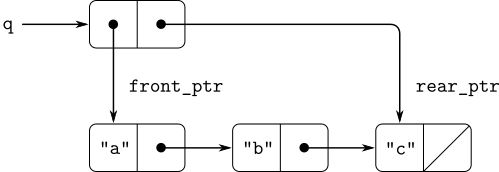

|
Operation
|
Resulting Queue
|
| const q = make_queue(); | |
| insert_queue(q, "a"); | a |
| insert_queue(q, "b"); | a b |
| delete_queue(q); | b |
| insert_queue(q, "c"); | b c |
| insert_queue(q, "d"); | b c d |
| delete_queue(q); | c d |

function front_ptr(queue) { return head(queue); }
function rear_ptr(queue) { return tail(queue); }
function set_front_ptr(queue, item) { set_head(queue, item); }
function set_rear_ptr(queue, item) { set_tail(queue, item); }
function is_empty_queue(queue) { return is_null(front_ptr(queue)); }
function make_queue() { return pair(null, null); }
function front_queue(queue) {
return is_empty_queue(queue)
? error(queue, "front_queue called with an empty queue")
: head(front_ptr(queue));
}
function insert_queue(queue, item) {
const new_pair = pair(item, null);
if (is_empty_queue(queue)) {
set_front_ptr(queue, new_pair);
set_rear_ptr(queue, new_pair);
} else {
set_tail(rear_ptr(queue), new_pair);
set_rear_ptr(queue, new_pair);
}
return queue;
}
function delete_queue(queue) {
if (is_empty_queue(queue)) {
error(queue, "delete_queue called with an empty queue");
} else {
set_front_ptr(queue, tail(front_ptr(queue)));
return queue;
}
}
const q1 = make_queue();
insert_queue(q1, "a");
[["a", null], ["a", null]]
insert_queue(q1, "b");
[["a", ["b", null]], ["b", null]]
delete_queue(q1);
[["b", null], ["b", null]]
delete_queue(q1);
[null, ["b", null]]
It's all wrong!he complains.
The interpreter's response shows that the last item is inserted into the queue twice. And when I delete both items, the second b is still there, so the queue isn't empty, even though it's supposed to be.Eva Lu Ator suggests that Ben has misunderstood what is happening.
It's not that the items are going into the queue twice,she explains.
It's just that the standard JavaScript printer doesn't know how to make sense of the queue representation. If you want to see the queue printed correctly, you'll have to define your own print function for queues.Explain what Eva Lu is talking about. In particular, show why Ben's examples produce the printed results that they do. Define a function print_queue that takes a queue as input and prints the sequence of items in the queue.
function print_queue(q) {
return display(head(q));
}
// provided by GitHub user devinryu
function make_queue() {
let front_ptr = null;
let rear_ptr = null;
function is_empty_queue() {
return is_null(front_ptr);
}
function insert_queue(item) {
let new_pair = pair(item, null);
if (is_empty_queue()) {
front_ptr = new_pair;
rear_ptr = new_pair;
} else {
set_tail(rear_ptr, new_pair);
rear_ptr = new_pair;
}
}
function delete_queue() {
if (is_empty_queue()) {
error("FRONT called with an empty queue");
} else {
front_ptr = tail(front_ptr);
}
}
function print_queue() {
display(front_ptr);
}
function dispatch(m) {
return m === "insert_queue"
? insert_queue
: m === "delete_queue"
? delete_queue
: m === "is_empty_queue"
? is_empty_queue
: m === "print_queue"
? print_queue
: error(m, "Unknow operation -- DISPATCH");
}
return dispatch;
}
function insert_queue(queue, item) {
return queue("insert_queue")(item);
}
function delete_queue(queue) {
return queue("delete_queue")();
}
function print_queue(queue) {
return queue("print_queue")();
}
double-ended queue) is a sequence in which items can be inserted and deleted either at the front or at the rear. Operations on deques are the constructor make_deque, the predicate is_empty_deque, selectors front_deque and rear_deque, and mutators front_insert_deque, front_delete_deque, rear_insert_deque, and rear_delete_deque. Show how to represent deques using pairs, and give implementations of the operations.
// solution provided by GitHub user clean99
function make_deque() {
return pair(null, null);
}
function front_ptr(deque) {
return head(deque);
}
function rear_ptr(deque) {
return tail(deque);
}
function set_front_ptr(deque, item) {
set_head(deque, item);
}
function set_rear_ptr(deque, item) {
set_tail(deque, item);
}
function is_empty_deque(deque) {
return is_null(front_ptr(deque))
? true
: is_null(rear_ptr(deque))
? true
: false;
}
function is_one_item_deque(deque) {
return front_ptr(deque) === rear_ptr(deque);
}
function front_insert_deque(deque, item) {
// use another pair to store a forward pointer
const new_pair = pair(pair(item, null), null);
if (is_empty_deque(deque)) {
set_front_ptr(deque, new_pair);
set_rear_ptr(deque, new_pair);
} else {
set_tail(new_pair, front_ptr(deque));
// set forward pointer to new_pair
set_tail(head(front_ptr(deque)), new_pair);
set_front_ptr(deque, new_pair);
}
}
function front_delete_deque(deque) {
if (is_empty_deque(deque)) {
error(deque, "front_delete_deque called with an empty deque");
} else if(is_one_item_deque(deque)) {
set_front_ptr(deque, null);
set_rear_ptr(deque, null);
return deque;
} else {
set_front_ptr(deque, tail(front_ptr(deque)));
return deque;
}
}
function rear_insert_deque(deque, item) {
if (is_empty_deque(deque)) {
const new_pair = pair(pair(item, null), null);
set_front_ptr(deque, new_pair);
set_rear_ptr(deque, new_pair);
} else {
// set new_pair forward pointer to last item
const new_pair = pair(pair(item, rear_ptr(deque)), null);
set_tail(rear_ptr(deque), new_pair);
set_rear_ptr(deque, new_pair);
}
}
function rear_delete_deque(deque) {
if (is_empty_deque(deque)) {
error(deque, "rear_delete_deque called with an empty deque");
} else if(is_one_item_deque(deque)) {
set_front_ptr(deque, null);
set_rear_ptr(deque, null);
return deque;
} else {
// update rear_ptr to last item's forward pointer
set_rear_ptr(deque, tail(head(rear_ptr(deque))));
return deque;
}
}